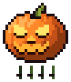
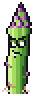

iCarrot Wiki
iCarrot is a 2D co-op raid game: up to three carrots fight waves of rotten vegetables and bosses with light raid mechanics, like a small 2D dungeon. It plays on desktop and in the browser. The art is hand-made pixel art generated in code, one unit to one game pixel.
This wiki is the game's design reference. It is written alongside the game and rebuilt whenever the game changes, so the numbers on every page are the ones currently in the game.
Tunable parameters
Most pages end with a Tunable parameters table: every value that can be changed in the Godot Inspector, what it does, and which file it lives in. The full list of those files is under Tuning files.
The Carrot
The player character: a caped carrot with a gun. How it moves, dodges, takes damage and gets back up.
 MovementHow the carrot runs, sprints, jumps, double jumps and drops through planks, on fixed-step platformer physics.
MovementHow the carrot runs, sprints, jumps, double jumps and drops through planks, on fixed-step platformer physics. DashA quick horizontal burst that makes the carrot untouchable for its whole length, so you can dash straight through attacks.
DashA quick horizontal burst that makes the carrot untouchable for its whole length, so you can dash straight through attacks. HealthEvery carrot has a recharging shield over its health. Hits drain the shield first; once it breaks, hits cost health, and at 0 health the carrot is knocked down.
HealthEvery carrot has a recharging shield over its health. Hits drain the shield first; once it breaks, hits cost health, and at 0 health the carrot is knocked down. AppearanceHow the carrot is drawn and brought to life: a per-pixel shaded body with a face, a cape, gold epaulettes, a belt and floating boots that all move as it runs, jumps and dashes.
AppearanceHow the carrot is drawn and brought to life: a per-pixel shaded body with a face, a cape, gold epaulettes, a belt and floating boots that all move as it runs, jumps and dashes.
Weapons
The guns a carrot carries, their ammo, and the energy ball they throw.
 RevolverA six-shooter sidearm, precise and hard-hitting, with almost no damage falloff.
RevolverA six-shooter sidearm, precise and hard-hitting, with almost no damage falloff. SMGA full-auto hose with a big magazine, deadly up close and nearly harmless at range.
SMGA full-auto hose with a big magazine, deadly up close and nearly harmless at range. ShotgunA pump-action that fans out a blast of pellets, strongest point-blank and weak at range.
ShotgunA pump-action that fans out a blast of pellets, strongest point-blank and weak at range. Rocket LauncherOne rocket, one huge explosion, then the slowest reload in the game.
Rocket LauncherOne rocket, one huge explosion, then the slowest reload in the game. Energy ballThe carrot's grenade, a crackling plasma orb that's lobbed, bounces, and bursts in an electric shockwave.
Energy ballThe carrot's grenade, a crackling plasma orb that's lobbed, bounces, and bursts in an electric shockwave.- Weapon HUDThe bottom-left readout of your energy ball's recharge, the rounds in your gun and its name.
Enemies
The rotten vegetables that come in waves.
 ZombieA rotten carrot that shambles toward the nearest player with its arms out and slaps them.
ZombieA rotten carrot that shambles toward the nearest player with its arms out and slaps them.
JackoA jack-o'-lantern on stubby vine legs that sprints at the nearest player, lights its fuse and blows itself up.
Spear-GusA tall asparagus sniper that drops onto a high perch, puffs up its cheeks behind a laser sight and spits a glowing scale at you. ShroomA portobello outlaw with a pistol in each hand that keeps its distance, takes aim and fires short bursts of slow glowing slugs.
ShroomA portobello outlaw with a pistol in each hand that keeps its distance, takes aim and fires short bursts of slow glowing slugs. Hot PepperA big hot-headed chili brute that lobs fireballs from afar, advances step by step, and breathes fire at point-blank range.
Hot PepperA big hot-headed chili brute that lobs fireballs from afar, advances step by step, and breathes fire at point-blank range. Big CobberThe Corn Ogre, a giant ear of corn in a husk jacket that stumbles after players, peels its husk open and sprays a sweeping volley of red-hot kernels.
Big CobberThe Corn Ogre, a giant ear of corn in a husk jacket that stumbles after players, peels its husk open and sprays a sweeping volley of red-hot kernels. Potato BullA lumpy potato on four stubby legs that paws the ground, charges in a straight line, and is left stunned and open if it slams into a wall.
Potato BullA lumpy potato on four stubby legs that paws the ground, charges in a straight line, and is left stunned and open if it slams into a wall.
Bosses
The big fights, each with its own mechanics.
 The GingerA flying ginger-root sorcerer that rules the burrow's hub. It can't be hurt until the squad brings back the three key orbs, and every orb unlocks more of its health and more of its fury.
The GingerA flying ginger-root sorcerer that rules the burrow's hub. It can't be hurt until the squad brings back the three key orbs, and every orb unlocks more of its health and more of its fury. Sweet PotatoThe top-room boss of the Burrow Encounter, a huge rosy sweet potato bull that chains charges into the walls, sends shockwaves along the floor and ambushes from underground.
Sweet PotatoThe top-room boss of the Burrow Encounter, a huge rosy sweet potato bull that chains charges into the walls, sends shockwaves along the floor and ambushes from underground. Red CornThe middle-room boss of the Burrow Encounter, a towering red-and-black ear of corn that sprays scissoring kernel streams, lobs popcorn mortars that leave burning patches, and slams its husk into the ground.
Red CornThe middle-room boss of the Burrow Encounter, a towering red-and-black ear of corn that sprays scissoring kernel streams, lobs popcorn mortars that leave burning patches, and slams its husk into the ground. Ghost PepperA dead bhut jolokia come back as a cartoon ghost. It floats, phases through bullets, teleports behind you, breathes ghost fire and looses homing wisps. The burrow's bottom-room boss.
Ghost PepperA dead bhut jolokia come back as a cartoon ghost. It floats, phases through bullets, teleports behind you, breathes ghost fire and looses homing wisps. The burrow's bottom-room boss. Ginger ShadeThe Ginger's immune spectral projection. It haunts whichever boss room the squad is fighting in and harasses the players there with telegraphed bolt fans.
Ginger ShadeThe Ginger's immune spectral projection. It haunts whichever boss room the squad is fighting in and harasses the players there with telegraphed bolt fans.
Encounters
Raid encounters: rooms, objectives and the mechanics that tie them together.
 Burrow Encounter
Burrow EncounterLevels
The places the game is played, and the parts they are built from.
 Title SequenceThe opening of the game, timed to its music. A star screen doubles as the lobby, a shooting star starts the song, the carrots walk to a cliff above a sea of clouds, the logo booms in, and everyone leaps.
Title SequenceThe opening of the game, timed to its music. A star screen doubles as the lobby, a shooting star starts the song, the carrots walk to a cliff above a sea of clouds, the logo booms in, and everyone leaps. ArenaThe original one-screen fighting ground on a sunny hillside, with three wooden planks over the grass.
ArenaThe original one-screen fighting ground on a sunny hillside, with three wooden planks over the grass. Garden IntroWork in progress: the game opens in a sunny vegetable garden, where the carrots walk past a giant carrot and jump down a mushroom-lined hole into the burrow.
Garden IntroWork in progress: the game opens in a sunny vegetable garden, where the carrots walk past a giant carrot and jump down a mushroom-lined hole into the burrow. Burrow TestA big scrolling test cave in the Warm Burrow look, built to try out the following camera, fixed camera shots and the biome parts.
Burrow TestA big scrolling test cave in the Warm Burrow look, built to try out the following camera, fixed camera shots and the biome parts.- Level PartsThe building blocks every level is made of, placed and tuned in the Godot 2D editor. Ground, ledges, mushrooms, doors, pedestals, torches, camera shots, spawn markers and props.
Biomes
The underground looks: ground, ledges, mushrooms and backdrops.
 Warm BurrowA cosy rabbit warren of warm brown soil just under the garden, with carrot taproots poking through and amber glow-caps for light.
Warm BurrowA cosy rabbit warren of warm brown soil just under the garden, with carrot taproots poking through and amber glow-caps for light. Overgrown VaultThe entrance hall of an ancient vegetable kingdom's vault, mossy stone and roots in green darkness, lit by a sealed gold-glowing door.
Overgrown VaultThe entrance hall of an ancient vegetable kingdom's vault, mossy stone and roots in green darkness, lit by a sealed gold-glowing door. Glowshroom GrottoA deep indigo cavern lit almost only by living things, with candy-coloured cyan, magenta and lime toadstools glowing out of the dark.
Glowshroom GrottoA deep indigo cavern lit almost only by living things, with candy-coloured cyan, magenta and lime toadstools glowing out of the dark. Compost DepthsThe rotten vegetables' lair, a comical compost-heap underworld of earthy strata, buried junk and mouldy glowing toadstools.
Compost DepthsThe rotten vegetables' lair, a comical compost-heap underworld of earthy strata, buried junk and mouldy glowing toadstools. Taproot HeartThe final boss chamber deep in the roots of a colossal carrot, giant amber taproots rising to a glowing heart above plum-dark soil.
Taproot HeartThe final boss chamber deep in the roots of a colossal carrot, giant amber taproots rising to a glowing heart above plum-dark soil.
Mechanics
Rules that cut across the whole game.
- DamageHow much hits hurt, on both sides. Every carrot has a shield over its health, guns get weaker with range, and dashes dodge everything.
 AmmoDestiny-style ammo: normal never runs out, special and heavy come from bricks dropped by dead enemies.
AmmoDestiny-style ammo: normal never runs out, special and heavy come from bricks dropped by dead enemies.- Co-opOne to three players fight together online, and the game also runs in a browser. Each player runs their own carrot; the host runs the enemies.
 ReloadingHow the guns reload, what each reload looks and sounds like, the reload bar under the crosshair, and what your co-op partners see.
ReloadingHow the guns reload, what each reload looks and sounds like, the reload bar under the crosshair, and what your co-op partners see.- CameraThe camera follows your own carrot, Terraria-style, leads ahead when you fall, and switches to a fixed shot inside arenas and boss rooms.
 Fight PacingHow a boss room's fight is paced in beats. Each beat brings a hand-picked squad of enemies in at one of the room's spawn groups when its trigger fires, so a fight rises and falls the way it was drawn.
Fight PacingHow a boss room's fight is paced in beats. Each beat brings a hand-picked squad of enemies in at one of the room's spawn groups when its trigger fires, so a fight rises and falls the way it was drawn.- PauseEsc or P freezes the game for everyone in the squad. Press either again to carry on.
- Enemy names and boss barsRegular enemies wear their name over their head with a little health bar. Bosses get a big name-and-health bar at the bottom of the screen instead, which shows when they're shielded or partly locked.
- Enemy wavesOutside raid encounters, a level keeps a set roster of enemies about. Each arrives in turn from the edges, and each one killed is replaced by another of its kind.